七、核磁共振波谱法 答案
一、选择题 ( 共90题 )
1. 2 分 (1073) (1) 2. 2 分 (1076) (2) 3. 2 分 (1077) (3)
4. 1 分 (1078) (1) 5. 2 分 (1113) (1) 6. 1 分 (1178) (1)
7. 2 分 (1186) (4) 8. 2 分 (1187) (3) 9. 2 分 (1188) (2)
10. 2 分 (1189) (1) 11. 2 分 (1190) (1) 12. 2 分 (1191) (1)
13. 2 分 (1192) (2) 14. 2 分 (1193) (3) 15. 2 分 (1195) (4)
16. 1 分 (1221) (2) 17. 2 分 (1650) (1) 18. 1 分 (1651) (2)
19. 2 分 (1652) (2) 20. 2 分 (1653) (2) 21. 2 分 (1654) (3)
22. 2 分 (1655) (4) 23. 2 分 (1656) (1) 单峰 24. 2 分 (1657) (3)
25. 2 分 (1658) (1) 3:1 26. 2 分 (1659) (2) 27. 2 分 (1660) (2)
28. 2 分 (1661) (2) 29. 2 分 (1662) (4) 30. 2 分 (1663) (2)
31. 1 分 (1664) (4) 32. 2 分 (1665) (1) 33. 2 分 (1666) (2)
34. 2 分 (1667) (4) 35. 2 分 (1668) (2) 36. 2 分 (1669) (2)
37. 2 分 (1670) (4) 38. 2 分 (1671) (2) 39. 2 分 (1672) (4)
40. 2 分 (1673) (3) 41. 2 分 (1674) (1) 42. 2 分 (1675) (4)
43. 2 分 (1677) (2) 44. 2 分 (1716) (3) 45. 2 分 (1718) (2)
46. 2 分 (1719) (1) 47. 2 分 (1720) (3) 48. 2 分 (1721) (1)
49. 2 分 (1722) (2) 50. 2 分 (1723) (b) 51. 2 分 (1724) (3)
52. 2 分 (1726) (d) 53. 2 分 (1802) (4) 54. 2 分 (1803) (3)
55. 2 分 (1804) (4) 56. 1 分 (1805) (1) 57. 1 分 (1806) (2)
58. 1 分 (1807) (4) 59. 1 分 (1808) (4) 60. 1 分 (1809) (1)
61. 2 分 (1810) (2) 62. 1 分 (1811) (1) 63. 2 分 (1812) (3)
64. 2 分 (1813) (2) 65. 2 分 (1814) (2) 66. 2 分 (1815) (2)
67. 2 分 (1816) (2) 68. 2 分 (1817) (4) 69. 2 分 (1818) (4)
70. 2 分 (1819) (3) 71. 2 分 (1820) (4) 72. 2 分 (1821) (4)
73. 2 分 (1822) (1) 74. 1 分 (1823) (4) 75. 1 分 (1824) (2)
76. 1 分 (1825) (3)
77. 2 分 (1826) (2)
化学位移数值：
a 3.2 b 4.1 c 2.1 d 0.9
78. 2 分 (1827) (3)
Jac=7Hz Jbc=15Hz Jcd=1.0Hz Jbd=6.5Hz
79. 2 分 (1828) (1)
化学位移数值：
a 1.5 b 3.5~5.5 c 2.0 d 1.8
80. 1 分 (1829) (3) 81. 1 分 (1830) (4) 82. 1 分 (1831) (1)
83. 1 分 (1832) (1) 84. 1 分 (1833) (4) 85. 1 分 (1834) (1)
86. 1 分 (1835) (4) 87. 1 分 (1836) (3) 88. 1 分 (1837) (2)
89. 2 分 (1838) (2)
90. 2 分 (2089)
[答] 纵向弛豫和横向弛豫
二、填空题 ( 共88题 )
1. 2 分 (2489)
[答] 自旋-晶格驰豫过程(纵向驰豫)和自旋-自旋驰豫过程(横向驰豫)
2. 2 分 (2050)
[答] (1) (3) (3)
（低） （高） （中）
3. 2 分 (2056)
[答] 由高能态回到低能态，而通过无辐射途径释放能量。
4. 2 分 (2058)
[答] 核外电子云所产生的屏蔽作用的大小不同；TMS（四甲基硅烷）(d= 0 )。
5. 2 分 (2096)
[答] 要高
6. 2 分 (2101)
[答] 试样经受的磁场更加均匀
7. 2 分 (2102)
[答] 四甲基硅烷.
8. 2 分 (2106)
[答] 屏蔽常数
9. 2 分 (2107)
[答] 外磁场强度要大
10. 5 分 (2488)
[答] ��Dn/J≥ 6 (7或10) 三 单峰, 三重峰, 三重峰 3:2:2
11. 2 分 (2490)
[答] 由于磁各向异性及O的电负性大于诱导效应
12. 5 分 (2491)
[答](1) 自旋-自旋偶合是核与核自旋之间的相互干扰作用
(2) 自旋-自旋裂分是由自旋偶合引起谱线增多现象
13. 2 分 (2493)
[答] (1) 1H核 (2) 去偶
14. 2 分 (2495)
[答]CH3I < CH3Br < CH3Cl < CH3F
15. 2 分 (2496)
[答]具有磁性的原子核
16. 5 分 (2497)
[答](1) 能态个数=2I+1=2×5/2+1=6
(2) 磁量子数m=I, I-1, I-2, ... -I m=5/2, 3/2, 1/2, -1/2, -3/2, -5/2
17. 5 分 (2498)
[答] (1) 2种 (2) 单峰 (3) 3:1
18. 5 分 (2499)
[答] 1个单峰 CH3-CO-CH3 6个质子相等
19. 2 分 (2500)
[答] (1) 2个 (2) m=+1/2��
20. 2 分 (2501)
[答] (1) 无线电波(或射频) (2) 波长约75～0.5m (3) MHz
21. 2 分 (2502)
[答] (1) 永久磁铁 (2) 电磁铁 (3) 超导磁体
22. 2 分 (2503)
[答] (1) 300 (2) 20
23. 2 分 (2504)
[答] 乙烯
24. 5 分 (2528)
[答] B A C 高7.047×10-6T 低300Hz
25. 5 分 (2530)
[答] 60Hz, 1.41×10-6T 200Hz 5Hz
26. 5 分 (2531)
[答] 42.58 4 13.66
27. 5 分 (2705)
加大磁场强度、同位素取代、自旋去耦（或称双照射法）、化学位移试剂、溶剂效应。
28. 2 分 (2706)
试样管、发射线圈（或扫描线圈）、接收线圈。
29. 2 分 (2707)
连续波核磁共振波谱仪； 脉冲傅里叶变换核磁共振波谱仪。
30. 2 分 (2709)
大大提高了分析速度和大大提高了灵敏度，还能提高分辨率。
31. 5 分 (2710)
脉冲射频源；
宽频带；
自由感应衰减信号；
干涉图；
经过傅里叶变换。
32. 2 分 (2711)
变大； 变大或变小； 变大或变小。
33. 2 分 (2712)
弛豫时间。
34. 2 分 (2713)
化学； 磁。
35. 5 分 (2714)
15.08MHz； 56.6MHz； 24.29MHz。
36. 5 分 (2715)
大； 减小； 高； 小； 小。
37. 5 分 (2716)
223Hz； 400Hz。
38. 5 分 (2717)
四氯化碳； 氘代氯仿； 氘代苯； （并不局限于以上三个） 重水D2O。
39. 2 分 (2708)
克服外磁场强度的漂移，使磁场有好的稳定性。
40. 2 分 (2718)
7/2；
7/2、5/2、3/2、1/2、－1/2、-3/2、-5/2、-7/2。
41. 2 分 (2719)
提供强磁场，以使自旋核产生能级分裂；
产生射频电磁辐射，使能级分裂的核吸收电磁辐射而产生能极跃迁。
42. 2 分 (2720)
旋耦合是相邻核自旋之间的相互干扰，而自旋裂分是由于自旋耦合引起峰增多的现象。
43. 2 分 (2721)
BC>BP>BF>BH。
44. 5 分 (2722)
诱导效应；
共轭效应；
（或以上两条合并成“电子效应”也可以）
磁各向异性效应；
氢键的生成；
溶剂效应。
45. 5 分 (2723)
自旋（或有磁性）；
强磁场 ；
能级分裂；
适宜频率（或进动频率）的射频辐射；
能级跃迁。
46. 5 分 (2724)
这化合物中的12个质子的化学环境是等同的，只产生一个峰；
质子的屏蔽常数最大，一般化合物的峰都出现在TMS左侧；
TMS是化学惰性的，易溶于大多数有机溶剂中；
沸点低（bp＝27℃）易于除去。
47. 2 分 (2725)
1H、2H、13C、14N、17O。
48. 2 分 (2726)
没有自旋现象，不会产生核磁共振跃迁。
49. 2 分 (2727)
原子核自旋； 无关。
50. 5 分 (2728)
甲醛； 乙炔； 甲醛； 乙炔。
51. 5 分 (2729)
200MHz； 702Hz。
52. 5 分 (2730)
增大； 不改变； 变大； m＝＋1/2； 增加。
53. 5 分 (2731)
取向数为2I＋1＝2； m=+1/2，m=－1/2； m为+1/2； m为－1/2。
54. 2 分 (2732)
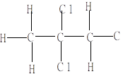
55. 2 分 (2733)
不一定； 一定。
56. 2 分 (2734)
1H； 13C（因为I＝1/2，DE=2mbB0）
57. 5 分 (2735)
叔丁基中的三个甲基CH3－；
CH3C＝O中甲基；
结构式是： 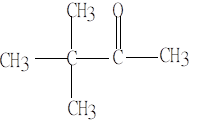
58. 5 分 (2735)
叔丁基中的三个甲基CH3－；
CH3C＝O中甲基；
结构式是： 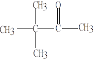
59. 2 分 (2737)
H（CH3）为三重峰，强度比为1：2：1；
H（CH2）为四重峰，强度比为1：3：3：1。
60. 5 分 (2738)
d； c、e； a、b。
61. 2 分 (2739)
dc>db>da。
62. 2 分 (2740)
2组峰；
－CH3三重峰d小（或在高场）（两者相比）－CH2－四重峰（或在较低场）；
峰面积之比为3：2。
63. 5 分 (2741)
3组峰：a： 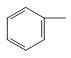
a：单峰 b：四重峰 c：三重峰；
da大（或低场），db中间（或中场），dc小（或高场）；
a：b：c＝5：2：3。
64. 5 分 (2742)
a为二取代苯基 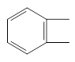
甲基与亚甲基相连，db、dc较大与 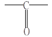 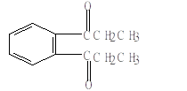
65. 5 分 (2743)
分子中化学环境不同的质子有几组；
分子中的基团情况或H核外的电子环境；
基团间的连接关系；
各基团的质子比。
66. 5 分 (2744)
CH4； CHCl3； CHCl3； CH4； CHCl3。
67. 5 分 (2745)
a为三个CH3CH2O－中的－CH3
b为三个CH3CH2O－的亚甲基
c为次甲基 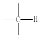
结构式是： 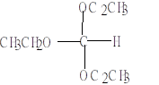
68. 2 分 (2746)
CH3CCl3。
69. 5 分 (2747)
db<da<dc； Bb>Ba>Bc。
70. 2 分 (2748)
烯键上的质子数（或积分面积比）(a)：(b)：(c)＝0：1：2。
71. 2 分 (2749)
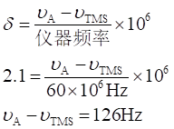
72. 2 分 (2750)
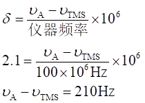
73. 2 分 (2751)
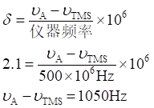
74. 2 分 (2752)
a>d>b>c
75. 2 分 (2753)
因为Ha－Hb J：6－10Hz
Ha－Hc 2--3Hz
Ha－Hd 0--1Hz
所以Ha－Hb>Ha－Hc>Ha－Hd(或Jab>Jac>Jad)。
76. 2 分 (2754)
d>a>c>b。
77. 2 分 (2755)
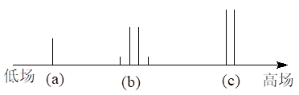
78. 2 分 (2756)
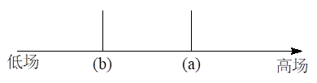
79. 2 分 (2757)
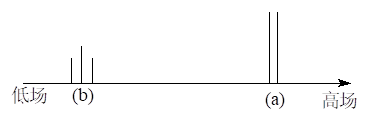
80. 2 分 (2758)
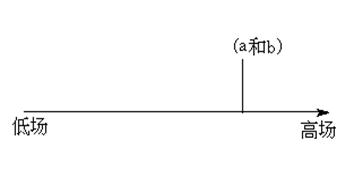
81. 2 分 (2759)
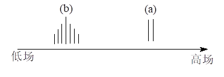
82. 2 分 (2760)
更小； 更大。
83. 2 分 (2761)
2； 更大； 更小。
84. 2 分 (2762)
共振信号的精细结构峰之间的距离； 核的相互作用； 不变。
85. 2 分 (2763)
相同的； 不同的。
86. 2 分 (2764)
sCH3 > sCH2 > sOH； nCH3 <nCH2 <nOH； dCH3 <dCH2 <dOH。
87. 5 分 (4519)
[答] 使试样在X-Y平面上受到的磁场均匀化, TMS吸收信号后的峰高是吸收信号高度的 85%~90% 。
88. 2 分 (4521)
[答] 弱、强、低、高。
三、计算题 ( 共29题 )
1. 5 分 (2492)
[答](1) d=n×106/n0, Dn=d×n0/106=20×100×106/106
=2000Hz (d=10, Dn=100Hz也可)
(2) Dn=DB×106/B0, ��DB=20×2.4T/106
=4.8×10-5T ( d=10, DB=2.4×10-5T也可)
2. 10 分 (3078)
[答] 1) 通常用四甲基硅烷 (TMS) 作内标物质来确定化学位移，这样做有许多好处。首先，这一化合物中的 12 个质子是等同的，只产生一个峰。由于其屏蔽常数比大多数其它质子的屏蔽常数大，一般化合物的峰都出现在 TMS 峰的左侧。此外， TMS 是化学惰性的，它易溶于大多数有机溶剂，沸点只有 27℃，测量完毕后只需加热，即可将其除去，使试样获得回收。
2) ��d1= 134/60 = 2.23
d2= 240/60 = 4.00
�� Dn 1 = 2.23×100 = 223 Hz
�� Dn 2 = 4.00×100 = 400 Hz
3. 5 分 (3097)
[答] ��d =Dn /n 0×106 = (120×106)/(60.0×106) = 2.00
4. 5 分 (3131)
[答] 乙酰丙酮有两种异构体
Ｏ Ｏ OH Ｏ
‖ ‖ | ‖
CH3- Ｃ - CH2 - Ｃ - CH3 和 CH3- Ｃ - CH - Ｃ - CH3
��d= 5.62 ��d = 3.33
由于 - CH2 - 上有两个氢，所以每一个氢相应积分高度应为：
19.5/2 = 9.75 单位
烯醇式含量是双酮式的 37/9.75 = 3.97 倍，所以烯醇式的质量分数= 3.97/(1+3.97) = 79.1%
5. 10 分 (3140)
[答] (1) 根据 n = mB/Ih 在磁场强度不变的条件下 ��n ∝ m��
∴ ��nC ��mC 0.70200
─── = ─── = ─────
��nH�� ��mH�� 2.79268
∴ ��n C= 0.70200/2.79268×100 MHz = 25.14 MHz
(2) 根据 n C = mC BC/Ih ; ��mP��=mPBp/Ih
今按题意 n C = mP ； mPBP =mC BC
∴ Bp = mCBC/mP= 0.70200/1.1305 ×2.35T = 1.46T
[答]13C 在磁场强度为 2.35T时的振荡频率为 25.14MHz31P 在 25.14ＭＨz 频率下，在 1.46T时发生核磁共振。
6. 10 分 (3373)
[答](1) 组成比
54.5 36.4 9.1
C:O:H= ── :── :── =4.54:2.27:9.1
12.0 16.0 1.0
= 2:1:4
(2) 据相对面积说明该化合物含有8个H
所以分子式为C4H8O2
结构为: CH3──CH2──COO──CH3
d : 1.2 2.3 3.6
三重峰 四重峰 单峰
7. 5 分 (3374)
[答] �� DEC hnC �� n C �� n C �荥�m C bH0/(ICh)
�� DE=hn, ─── = ─── = ── ・ ── = ──────────
�� DEH�� hnH�鳅� nH �� nH �鳅� mH bH0/(IH h)
I C =IH��, ��n C /nH =m C /mH =0.702/2.793 =0.251
8. 5 分 (3375)
[答] Ho nN �� mN /IN�� mN ×IH��
n =m b── 二者相比 ── = ────, nN =nH ×─────
Ih nH �� ��mH /IH�� mH ×IN��
mN ×1/2�� 0.404×1/2��
nN =nH ×──── =1.0×108×───── =7.24×106MHz
mH �茭� 2.793
9. 5 分 (3376)
[答] m bH0 ��n (Al) ��m (Al) n (Al)
n = ────, ─── = ───, ��m (Al) =mH×───
Ih n H�� mH�� n H�鳅�
�� m (Al) =2.793×(15.6/60.0) =0.726
10. 5 分 (3377)
[答]��d =Dn / no×106, 使用60MHz仪器 ��d =[240/(60.0×106]]×106=4.00
使用100MHz仪器 ��Dn =dno /106 =4.00×100×106/106=400Hz
11. 5 分 (3378)
[答]��d =Dn / no×106 =(430×106)/(90×106) =4.78
12. 5 分 (3379)
[答] mHHo 1.41×10-12J/T ×2.4T
n = ──── = ─────────── =1.0×1016/s
hI 0.663×10-27J・s×1/2
=1.0×108MHz
13. 10 分 (3406)
[答](1) n =(2mb/h)B0(1-s )=(2mb/ h)Beff
A的n 较高, 故推断A的Beff较高. (屏蔽较小)
Dn =(2mb/h )DBeff =(2mb B0/h)[DBeff/B0]
=[DBeff/B0]��n0
DBeff =(Dn/n0)B0=(480/60×106)×1.409
=1.127×10-5(T)
(2) 以TMS的s=0, 共振频率为n0, 则
��n=n0(1-s) 或��s=-(n -n0)/ n0
∴A质子, s (A) =-360/(60×106) =-6.0×10-6
B质子, s (B) =-[-120/(60×106)] =-2.0×10-6
14. 5 分 (3538)
根据两个单峰的半高宽一样
ω(p)=h对/(h对+h邻)=24/(24+17)=58.5%
15. 5 分 (3539)
δ=2.2处为甲苯中甲基CH3―质子所形成峰的为15个单位,则每个质子为15/3=5个单位. δ=7.3处为苯与甲苯中苯基质子所形成的峰,甲苯中每个质子的积分值为5,则苯基五个 质子其积分值共为5×5=25
苯的积分值为85-25=60
苯有六个质子,每个质子的积分值为60/6=10
苯与甲苯的比例=10:5=2:1
16. 5 分 (3540)
根据
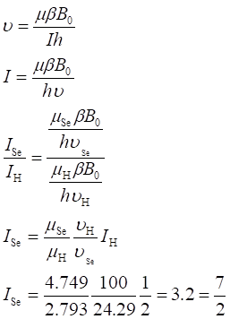
17. 5 分 (3541)
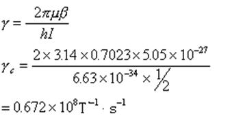
18. 5 分 (3542)
根据
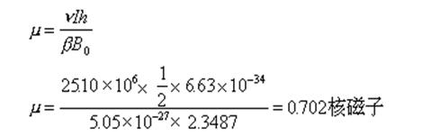
19. 5 分 (3543)
(1) 在100MHz射频照射下,化学位移值d=2.7,因为d值不随仪器选用的频率而改变.
(2) 求两者Dn Dn=d・n 0 ×10-6
60MHz谱仪上 Dn=2.7×60×106×10-6=162Hz
100MHz谱仪上 Dn=2.7×100×106×10-6=270Hz
20. 5 分 (3544)
根据d=Dn/n 0 ×106
(1) Dn=d・n 0 ×10-6=7.4 ×90=666Hz
(2) d=171/90=1.9
21. 5 分 (3545)
（1）顺序为DEH >DEAl >DEAs >DEN
（2）根据相邻两能级能量差
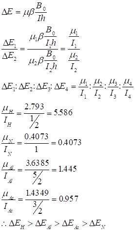
22. 10 分 (3546)
（1）1H的共振频率
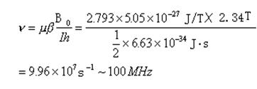
（2）求13C的共振频率（在80MHz仪器上）
对质子80MHz相应的磁场强度
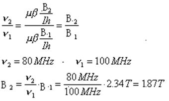
对13C
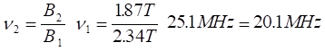
23. 10 分 (3547)
根据
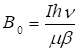
(1)13C:
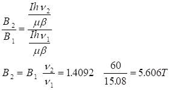
(2)19F
根据13C、19F的自旋量子数都是I´＝1/2
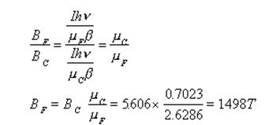
24. 2 分 (3548)
根据：
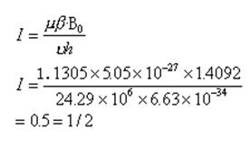
25. 2 分 (3549)
(1)能态数 2Ι+1 为2×(7/2)+1=8个
(2)磁量子数 m=Ι, Ι-1, Ι-2,…-Ι
m=7/2,5/2,3/2,1/2,-1/2,-3/2,-5/2,-7/2
26. 2 分 (3550)
d=Dn /n 0 ×106 Dn=d・n 0 ×10-6
不同仪器的d相同
Dn =6.8×300×106×10-6=2040Hz
27. 5 分 (3551)
(1)1H两能极能量之差：
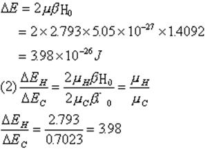
28. 5 分 (3552)
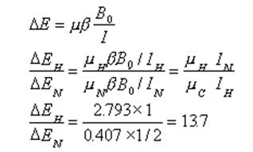
29. 2 分 (3553)
根据γ：
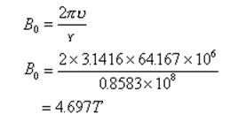
四、问答题 ( 共 88 题 )
1. 5 分 (2494)
[答]因为13C自然界丰度很低, 只占1.1%, 同时13C核的磁矩很小, 所以13C的共振强度 很小, 因此必须采用脉冲傅里叶变换核磁共振谱仪才能得到广泛的应用与研究.
2. 5 分 (4016)
Br Ｈ
┃ ┃
CH3- Ｃ - CH2- Ｃ - Br
1 4┃ 2 ┃3
Ｈ Ｈ
��d11.7 峰为甲基受相邻一个质子偶合的双峰。因相邻碳上连有溴原子，故 d2增大。d22.3是亚甲基受到相邻碳上三个质子的偶合 (- CH - CH2- CH2- )，故为四重峰。d33.5 是亚甲基受相邻碳上二个质子的偶合(- CH2- CH2- )，故为三重峰。因同碳原子上带有溴原子，其化学位移位于 ��d2.3 处的亚甲基。 ��d44.3 是 CH的峰。因受到相邻碳上 5 个质子 ( CH3 和 - CH2- ) 偶合故分裂成六重峰。因碳上连有 Br，故d值增大。
3. 5 分 (4017)
[答] 一个碳原子上联有两个 Cl，（同碳质子的）d数值较大，故为 d2= 5.77 ,另一个碳原子上联有一个 Cl，（同碳质子的) d数值较小，故为 ��d1= 3.95 ,因此， 1,1,2 - 三氯乙烷的结构式为
Cl Cl
┃ ┃
H - Ｃ1-Ｃ2- H
┃ ┃
Ｈ Cl
峰 1 面积：峰 2 面积 = 2 : 1
采用高分辨核磁共振谱仪时，峰１分裂成以��d1= 3.95 为中心的双峰；峰２分裂成以d2= 5.77 为中心的一组三重峰。
4. 5 分 (4031)
[答]由于该化合物所有的质子都是化学等价的质子，所以在谱图中仅有一个峰，因此 无比例可测。
5. 5 分 (4043)
[答] H 需要的照射频率最大。
31P 需要的照射频率最小。
因为 n = 2mB0/h,当 B0固定时，n ∝ m, 而mH >mF > mP,所以,��nH�亲畲�nP最小。
6. 10 分 (4047)
[答] W = 1/2 [ 3(4-2) + 3(1-2) + 5(1-2) + 2 ] = 0
从 NMR 谱图质子峰的归属推测该化合物为：
Cl Ｈ Cl
│ │ │
H - Ｃ - Ｃ - Ｃ - H
│ │ │
Cl Cl Cl
分析：(a) 质子 (1H) 由于受到相邻二个碳上磁等效质子的屏蔽作用和 Cl 原子电负
性的影响裂分为三重峰且出现在中场。
(b) 质子 (2H) 为二边二个 C 原子上磁等效的质子，多受中间 C 原子上质子 的自旋偶合作用而裂分为二重峰，峰面积相当于 2H，又因受电负性较强的 2 个 Cl 原子的影响，故化学位移到较低场。
7. 10 分 (4048)
[答] W = 1/2 [ 2(4-2) + 7(1-2) + 2(2-2) + 1(3-2) + 2 ] = 1
从 NMR 谱图分析质子峰的归属可推测该化合物为：
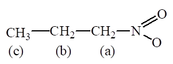
（从左向右解析质子峰，(b) C 原子上的质子峰理应 12 重，但因仪器分辨率不够，所以只看到 6 重峰）。
8. 5 分 (4050)
[答]自左至右质子以符号c、a和b表示
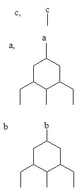
9. 5 分 (4077)
[答]自左至右质子的符号以a、b、c和d表示
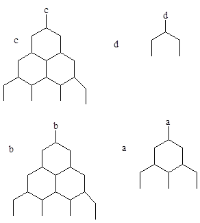
10. 5 分 (4103)
[答] 1H 核
n 共= 2mB0/h
当 H0一定时，n 共�恪� m�埽�而 1H 的核磁矩最大，因此，其共振频率最大。
11. 5 分 (4126)
[答] 核外电子云对核的屏蔽作用。原子核外有绕核运行的电子，每个原子核被不断运动着的电子云所包围，在外磁场作用下电子的运动产生感应磁场，其方向与外磁场相反，这种对抗外磁场的作用称为屏蔽作用，它使原子核实际受到的磁场作用减小，为了使原子核共振必须增加外磁场强度（或改变电磁辐射频率）因此产生化学位移。
12. 5 分 (4127)
[答]
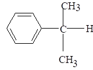
三组峰： a：单峰，低场
b：两重峰，高场
c：七重峰，在a、b场中间
峰面积之比： a：b：c ＝ 5：6：1
也可画图：
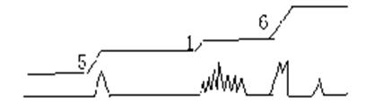
13. 5 分 (4129)
[答]
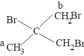
两组峰均为单峰 , Ha 高场 Hb 低场 峰面积比 a : b = 3 : 4
画图： 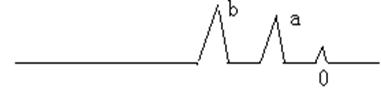
14. 5 分 (4141)
[答]
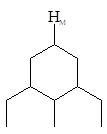
与 HA偶合
与 Hx偶合
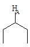
与 HM偶合
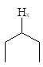
与 HM偶合
15. 5 分 (4400)
[答]磁铁, 射频振荡器, 扫描发生器, 试样管和探头, 检测器, 记录仪.
16. 5 分 (4401)
[答]在强磁场中, 具有磁性的原子核, 产生能级分裂, 吸收一定频率的电磁辐射, 由低能级跃迁到较高能级而产生.
每层意思1分, 共5分, 每一层意思回答一定要准确
17. 5 分 (4402)
[答](1) 不饱和度 =1+9-10/2 =5 有苯基及1个双键
(2) a. 1个甲基 -CH3
b. 1个亚甲基 -CH2-
c. 苯基 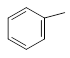
(3) 由(2)可知只有1个碳与氧未用上 有-OOC-
-CH3甲基d值大
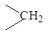
(4) 结构式 �� 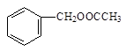
18. 5 分 (4403)
[答](1) 不饱和度 1+7-8/2 =4 有苯基
(2) (c)可能是
(b)可能是亚甲基 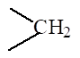
(a)可能是OH �� �� �� �� ��
(3) 结构式 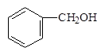
19. 5 分 (4404)
[答](1) 有3种类型质子
(2) (a) d小(高场) 3重峰
(b) d中(中间场) 4重峰 ��
(c) d大(低场) 单峰
(3) 质子数之比a:b:c =6:4:2
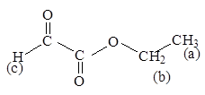
20. 5 分 (4405)
[答]a. 甲基 -CH3
b. 亚甲基 -CH2-
c. 羧基 -COOH
∴是丙酸 CH3CH2COOH
21. 5 分 (4406)
[答]不饱和度 =1+7-8/2 =4 有苯基
a. 甲基 -CH3
b.
结构式为 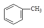
22. 5 分 (4407)
[答] 1. 有三种类型质子a, b, c
2. a. 化学位移d大(在低场), 单峰
b. d在中间(三者比在中场), 3重峰
c. d值小(在高场), 5重峰
3. 峰面积之比(相对强度): a:b:c =1:2:1
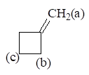
23. 5 分 (4408)
[答]CH3-CO-H 1. 有两种类型质子
(a) (b) 2. (a) d小(高场), 双重峰
(b) d大(低场), 4重峰
3. 峰面积之比 a:b =3:1
24. 5 分 (4409)
[答](1) 碳是有机化合物分子基本骨架, 13C谱可得到有机化合物分子"骨架"的结构信息,而1H谱只能提供分子"外围"结构信息.
(2) 1H化学位移范围约为20, 13C谱则为300, 比1H谱大15倍, 因此13C谱中, 峰间重叠的可能性小
(3) 13C-13C自旋分裂极少见
25. 5 分 (4410)
[答](1) 不饱和度 =1+11-16/2 =4 有苯基
(2) a. 有三个甲基 -CH3
b. 有一个亚甲基 -CH2-
c. 苯
(3) a, b, c中共有碳10个, 还少1个, 都是单峰
(4) ∴ 结构式: 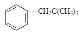
26. 5 分 (4442)
[答] d 2.2, 2H 五重峰 说明有4个等价的邻接H, 故该化合物结构为:
CH2(CH2Cl)2
27. 5 分 (4443)
[答] Me Me Me
│ �� CH3OH │ �� Mg │��
Me─Ｃ─Me ←──── Me─ＣCH2MgBr ←─── Me─Ｃ─CH2Br
│ �� │ �� 乙醚 │��
Me Me Me
B A
↑
在NMR图中显单峰仅可能该化合物
28. 5 分 (4444)
[答] (CH3)2C=C(CH3)2
29. 5 分 (4445)
[答] ��
30. 5 分 (4447)
[答] ��
a: d��=7.3(5H) 单峰
b: d��=2.8(2H) 三重峰
c: d��=3.5(2H) 四重峰
d: d��=6.4(1H)
e: d��=1.9(3H) 单峰
31. 5 分 (4448)
[答]
a: d��=7.15
b: d��=2.5
c: d��=1.9
d: d��=0.9
32. 5 分 (4449)
[答] ��
a: d��=7.25
b: d��=1.35
33. 5 分 (4450)
[答]
a: d��=2.25
b: d��=7.05
c: d��=2.8
d: d��=1.24
34. 5 分 (4451)
[答] 6H 二重峰 ��d 1.2 含 (CH3)2CH-
1H 七重峰 ��d 1.6 (CH3)2CH-
1H 宽单峰 �� d 4.0 -OH
(CH3)2CHOH
35. 5 分 (4452)
[答] 6个H 双峰 说明含 (CH3)2CH- 3个H 双峰 说明含 CH3CH- ��
该化合物为 (CH3)2CHCH(CH3)Br
36. 5 分 (4453)
[答] 在NMR谱图中仅显示单峰说明该化合物没有自旋-自旋裂分, ∴全部质子是等 价的再结合分子式故该化合物为:
(CH3)3C-O-C(CH3)3
37. 5 分 (4454)
[答] (a) CH3CH2CHCl2 (b) ClCH2CH2CH2Cl
(c)
38. 5 分 (4455)
[答] (CH3)2 CH CHBr CH3
↑ ↑ ↑ ↑
6H 1H 1H 3H
双峰多重峰多重峰双峰
39. 5 分 (4456)
[答] Ｏ
‖
CH3ＣOCH2CH3
40. 5 分 (4457)
41. 5 分 (4458)
[答] HCOOCH2CH2CH3
42. 5 分 (4459)
[答] CH3 CH3 CH3
│�� │ │ ��
(1) H3C─C─CH3 (2) CH2ClCH2Cl (3) CH3─C──C─CH3
│ �� │ │�� ��
CH3 CH3 CH3
43. 5 分 (4460)
[答] (1) CH3OCH3 (2) CH3C=CCH3 (3) CH2─CH2
│ │ �� ��
CH2─CH2
44. 5 分 (4461)
[答] C、H、Cl三者元素分析值总和不足1, 所以该化合物含氧, 故分子式为 C3H5O2Cl.
C:H:Cl:O =2.75:4.6:0.94:1.84 ≈3:5:1:2
根据核磁共振谱在低场有吸收说明这是羧酸,
CH3CHCOOH
│ ��
Cl
45. 5 分 (4462)
[答] d e
(CH3)2CHCHCH3 a: d ��=0.9二重峰(6H)
a b │�� b: d ��=1.6 八重峰(1H)
OH c: d ��=2.6 单峰 (1H)
c d: d ��=3.6 五重峰(1H)
e: d ��=1.1 二重峰(3H)
46. 10 分 (4463)
[答]
a: d =7多重峰 (4H)
b: d =5 多重峰 (3H)
c: d =2.3 单峰 (3H)
a: d =7.2 多重峰 (4H)
b: d =12 单峰 (1H)
c: d =2.3 单峰 (3H)
a: d =7.4 多重峰 (4H)
b: d =12 单峰(2H)
47. 5 分 (4464)
[答] O
‖
(i) CH3CH2CCH2CH3 a: d =2.47 四重峰 (2H)
a b b: d =1.05 三重峰 (3H)
O
‖ a: d =2.13 单峰 (3H)
(ii) CH3CCH(CH3)2 b: d =2.22 七重峰 (1H)
a b c c: d =1.02 二重峰 (6H)
CH3
│ b
(iii) CH3─C─CHO a: 单峰 (9H)
│ �� b: 单峰 (1H)
CH3
a
48. 5 分 (4465)
[答] CH3 OCH2 CH2CN ← 在2000cm-1附近有红外吸收
↑ ↑ ↑
一重峰 三重峰 三重峰
49. 5 分 (4466)
[答]
50. 5 分 (4467)
[答]
51. 10 分 (4468)
[答]从IR图谱看在3400cm-1是OH的吸收位置, =C-H的伸缩振动吸收几乎被OH吸收 峰所掩盖, C=C的伸缩振动吸收在2120cm-1, 在670cm-1处有=C-H的弯曲振动吸收, 因此具有R-C=CH结构.
从NMR看��d=2.5处有一单峰, 相当于=C-H ; 在d=1.5处有6个质子, 是两 个CH3; d=4.3处相当于O-H, 因此具有的结构是:
OH
│ ��
(CH3)2CC=CH
52. 5 分 (4475)
[答] (a)
(b)
(c)
(d)
(e)
(f)
53. 5 分 (4476)
54. 5 分 (4520)
[答] 在高频场中, 由于试样磁化而产生色散信号, 吸收信号与色散信号相差90o因此要记录纯吸收信号, 可调节"相位旋钮"。 当调到峰前峰后一条线时, 即合适。
55. 5 分 (4628)
超导磁体提供磁场的优点:
(1) 磁场强度高(可达10~15T), 相应于质子的工作频率就高(可达400~600MHz)
(2) 稳定性好
(3) 均匀性好
(4) 分辨率高
缺点: 价格昂贵
56. 5 分 (4629)
外磁场强度B0加大, 则共振频率就高(n=mbB0/Ih), 高低能的能级差DE就大. (DE=hn )(式中mb为核磁矩, I为自旋量子数, h普朗克常数) 根据Boltzmann定律:
Ni/N0 = e-△E/kT
(式中Ni ,N0 为处在高能级与低能级上的核总数; h为Boltzmann常数; T为绝对温度)
由式中可见, DE加大, T降低, Ni /N0 的比值就会减小, 处于低能级的核的数目就会增加, 因此就可提高观察NMR信号的灵敏度
57. 5 分 (4630)
可以.外磁场强度加大, 则共振频率高(n=mbB0/Ih), 高低能级的能量差就大(DE=hn), 根据Boltzmann定律:
Ni/N0 = e-DE/kT
式中, N i, N0为处在高能级与低能级上的核总数; k 为Boltzmann常数; T为绝对温度. 若 温度不变, DE加大, Ni /N0 的比值就减小.
58. 5 分 (4631)
(1) 其化学位移值相同, 因为化学位移值d是相对值, d=Dn/n0×106 , 不随仪器使用频
率而变.( n 0为所用仪器的电磁辐射频率)
(2) 与TMS之间的频率Dn, 100MHz的大, 因为Dn＝d×n0×10-6
59. 2 分 (4632)
在恒定的外加磁场存在时, 由于分子体系中各种氢核所处的化学环境的不同, 使它们具 有不同的共振频率, 图谱上这些峰与峰之间的差距就被称为化学位移.其定义为:
d=(n试样- n TMS)/核磁共振仪频率×106 或 τ=10 - d
60. 2 分 (4633)
自旋耦合产生的峰裂分后, 两峰之间的距离称为耦合常数.它不随外磁场强度的变化而 变化.
61. 5 分 (4634)
（1） 两种类型
（2） 两种类型
（3） 三种类型
62. 2 分 (4635)
具有自旋现象的原子核, 它的核磁矩与其自旋角动量之比为磁旋比. 不同的原子核具有 不同的磁旋比(或每种核有其特定值), 它与外磁场强度无关.也可列出下式:
γ=2pmb/ hI
核磁矩为mb, 自旋角动量为hI/2π
63. 5 分 (4636)
屏蔽常数s表示核外电子云对核的屏蔽作用. 或者说绕核运动的电子在外磁场作用下产 生的感应磁场抵消外加磁场的程度. 屏蔽常数s与核外电子云密度和核所处的化学环境 有关.即电子云密度越大, 产生的抗磁场强度越大, 使有效屏蔽常数越小, 共振跃迁则在 高场出现信号.
64. 5 分 (4637)
影响化学位移的诱导效应是一些电负性基团(如卤素, 硝基,氰基等)具有强烈的吸电子能力造成的. 它们通过诱导作用, 使与之邻接的核的外围电子云密度降低, 从而减小电子 云对该核的屏蔽, 使核的共振频率向低场移动, 使化学位移值d增大.
65. 5 分 (4638)
磁各向异性效应是在外磁场作用下, 分子所产生的感应磁场, 使分子所在的空间出现屏 蔽区与去屏蔽区, 导致不同区域内的原子核(或质子)共振信号移向高场或低场, 使化学 位移值d可能变大, 也可能变小.
66. 5 分 (4639)
NMR法中, 有相同化学环境的原子核, 具有相同的化学位移, 这种有相同化学位移的核称为化学等价. 分子中的一组核, 其化学位移相同, 而且对组外任何一个原子核的耦合常数都相同称为磁等价. 两者关系为化学等价的核不一定是磁等价的, 而磁等价的核一定是化学等价的.
67. 10 分 (4640)
IR吸收在1640cm-1, 可能为不对称烯烃nC=C结构1H-NMR说明有12个氢原子, 至少有6个碳原子(烯烃通式为:CnH2n ), d=1.0(单峰, 9H), 这是典型叔丁基, d=5.7(1H, 多重峰)为与叔丁基相邻的双键C原子上的质子, d=4.9(2H, 多重峰)应为烯键一端的两个质子. 据此推测该化合物结构为:
(CH3)3CCH=CH2
68. 10 分 (4641)
从1H-NMR说明是一取代苯, 其质量数计(C6H5-为77), 则102-77=25, 可能是C2H, (-C≡CH), 而IR在2210cm-1j是n C≡C; 3310cm-1是n =C-H, 从1H-NMR建议是末端炔烃.
结构为
(分析出NMR谱相应的基团得4分, 分析出IR谱相应的基团得4分, 总结出正确的结构加2分)
69. 10 分 (4642)
由分子式计算得不饱和度为3. 1H-NMR谱d=1.25有3H, 三重峰, 可能是甲基, d=3.55有2H单峰, 可能是邻C无质子的去屏蔽的CH2, d=4.2有2H, 四重峰, 这与 d=1.25(3H, 三重峰结合考虑, 表明有CH3CH2-存在.
IR谱2940~2990cm-1 说明有饱和C-H键存在, 2280cm-1 有典型的C≡N吸收峰, 1750cm-1 说明有强的-COO-吸收峰, C≡N和>C=O二者不饱和度为3 .
综合上述二谱特征, 该化合物结构为
N≡CCH2CO2CH2CH3
(写出不饱和度得1分, 正确指出IR谱上特征峰相应的基团得3分, 正确分析出NMR谱上三处 值相应的基团得3 分, 总结出结构式再加3分)
70. 10 分 (4643)
首先确定可能的分子式。由于没有质谱和元素分析数据，因此只能根据相对分子质量和 1H－NMR谱确定其分子式。1H－NMR谱从低场到高场，只有两个峰且峰面积比为2：3。由于分子中没有氮、硫、卤素，因此分子可能由O、H、C或C、H组成，分子中氢原子数目必为偶数，且C原子<=105/12＝8.75，所以可对氢原子和氧原子数值一些假设：
C为8，H为10，（105±2）－8×12＝9±2
C为7，H为20，（105±2）－7×12＝21±2
C为6，O为1，H=(105±2）－6×12－16＝17±2
C为5，O为2，H=(105±2）－5×12－32＝13±2
C为4，O为3，H=(105±2）－4×12－16×3＝9±2
上述碳原子数接近整数者是比较合理的，故未知物分子式可能为：C8H10或C4H10O3
UV谱280～240nm有吸收且有精细结构，表明存在芳环。
IR谱表明3000cm-1内外有吸收，则化合物中存在饱和和不饱和CH伸缩振动，1450～ 1600cm-1有芳环骨架振动特征峰，800cm-1为典型对二取代苯吸收峰，若为对二取代 苯C8H10的不饱和度为4， 与IR谱重合。
NMR谱δ7. 0处相当有4个H的话，这是二取代苯，δ2. 2处相当有6H单峰，结合 分子式，可见这是两个孤立的甲基。
由此总结出该化合物的分子式为
71. 5 分 (4644)
(1) C2H6O 为CH3-O-CH3
(2) C3H6Cl2为
(3) C3H6O 为CH3-CO-CH3
72. 5 分 (4645)
73. 5 分 (4646)
本化合物C5H10Br2, 可看出用氢取代溴则符合CnH2n , 为饱和脂肪烃. 由峰面积之比 可知质子数a(2H), b(4H) , c(4H), 末端为CH2Br, 两个末端完全一样.
结构式为BrCH2CH2CH2CH2CH2Br
(c) (b) (a) (b) (c)
74. 5 分 (4647)
CH3CH2OCOCH2CH2COOCH2CH3
a b c c b a
(1) 有三种类型质子
(2) 化学位移 峰裂分
a d 小(高场) 3重峰
b d 大(低场) 4重峰
c d 在中间(三者比在中场) 单峰
(3) 峰面积(相对强度之比)
a:b:c =3:2:2
75. 5 分 (4648)
76. 5 分 (4649)
有自旋现象的原子核, 在外磁场作用下, 核自旋产生的磁场与外磁场相互作用, 结果使 核自旋外, 还同时产生一个以外磁场方向为轴为回旋运动, 称为进动. 其频率即为进动 频率或称Larmor频率. 进动频率与外磁场强度成正比.
(也可写出Larmor方程式: n0 =γ/2π・B0
式中, n0为进动频率, B0为外磁场强度, γ为磁旋比)
在给定的磁场强度下, 核的进动频率是一定的, 若在此磁场强度下, 以进动频率的射频 辐射照射自旋核, 就会产生核磁共振. 在一定的磁场强度作用下, 核磁共振的辐射频率 与进动频率是一至的.
77. 5 分 (4650)
能产生(2I+1=2)个能级.
这两个能级用m(m为磁量子数)来表示, 其值m=I,I-1,I-2, …, -I , 因此为
m=1/2为低能级
m=-1/2为高能级
它们相邻两能级能量差能够相等. 这些核的磁矩虽不同, 但是能级能量差为 DE=2mbB0(式中mb为核磁矩, B0为外磁场强度, 只要外加磁场强度各选择合适的数值, 它们的能级能量之差DE就会相等的.)
78. 2 分 (4651)
原子核外有绕核运行的电子, 每个原子核被不断运动的电子云所包围, 在外磁场作用下, 电子的运动产生感应磁场, 其方向与外磁场相反, 这种对抗外磁场的作用称为屏蔽作用. 它使原子核实际受到的外磁场作用减小.
79. 10 分 (4652)
算得不饱和度为4,可能存在芳环,(C6H5-)这在NMR谱中得到证明; 又根据谱图δ=7.15 含有5个氢原子, 可知是一取代芳烃; 再根据IR谱图3380cm-1有宽强吸收峰, 可能存在 -OH, 这两个基团总和为C6H6O, 这样分子式C8H10O减C6H6O还有C2H4. 根据NMR 分裂型式和化学位移提供的信息, 最后可确定化合物
A为 B为
(由不饱和度得出为一芳香属化合物得2分, 由IR谱得出二者均有-OH得2分, 由NMR得出一取代苯得2分, 写对A和B和结构式加4分)
80. 10 分 (4653)
根据质谱有双重分子离子峰及相对丰度3:1, 可知化合物中存在氯原子. NMR单峰可能 是甲基酮, NMR谱有对称的芳环多重峰, 其面积相当于4 个氢原子, 这是典型的对二取 代.IR谱1695cm-1为羰基特征吸收
该化合物结构为
(ＭＳ谱分析得出有氯原子得2分, IR谱说明有羰基得2分, NMR谱得出有CH3和二取代苯得4分, 得出正确的结构式再加2 分)
81. 10 分 (4654)
由分子式算得不饱和度为5, NMR谱图显示是一取代苯环, IR谱显示有羰基, 有苯环骨架振动吸收峰, 这两个基团的不饱和度恰好为4, 且这两个基团的式量为C7H5O, 这样 C9H10O-C7H5O=C2H5. NMR显示3H与2H都是单峰, 由此得出该结构应为
C6H5CH2COCH3
(计算出不饱和度得1 分, 正确地指出IR谱上主要的特征峰基团得4 分, 正确地分析出NMR谱上三个δ值处相应的基团得4 分, 正确的写出结构式再加1 分)
82. 10 分 (4655)
根据IR谱该化合物可能含有羰基. 由1H-NMR可知含8个质子, 这样至少还有三个碳原 子. 根据1H-NMR的化学位移值分析:
d=1.1 6质子双峰, 可能是磁等效的两个甲基
d=3.9 1质子七重峰, 则为与两个甲基相邻的次甲基
d=4.8 1质子单峰, 应为羟质子
由上述分析总结出该化合物结构为:
CH3CHOHCH3 (异丙醇)
(得出IR谱结论 2 分, 得出NMR谱三处δ值 对应基团6分, 总结出结构式 2分)
83. 10 分 (4656)
含一个氮原子而且IR特征峰在2240cm-1可能是-CN基, 而IR1730cm-1 可能是酯羰基. NMRδ=3.8单峰可能是去屏蔽的甲基, 而δ=2.7(单峰, 4H)可能是两个磁等价的CH2, 亦就是说在此化合物中氰基与酯基对CH2的影响相等.
因此, 该化合物结构为
N≡CCH2CH2COOCH3
(写出IR特征峰基团得3分, 说明NMR二个单峰成因得4 分, 综合得出结构式再得3 分)
84. 10 分 (4657)
一个含氮有鱼腥味的液体, 这是胺的特性, IR在3300cm-1有双峰, 故可能是伯胺, 从元 素分析计算:
C: 68.93/12.01=5.74
H: 15.04/1.008=14.92
N: 16.08/14.005=1.15
经验式为C5H13N
而NMR d=0.8证明有一个叔丁基, 与 d=1.1证明一个含两个质子的基团
结构式为: （CH3）3CCH2NH2
85. 5 分 (4658)
(A) (B)
这两个非对映体的甲基在（A）中是反式，而在（B）中是顺式，化合物（B）有一个 对称面，在（B）中环上亚甲基上氢一个对甲基是顺式，另一个则对氯是顺式，所以两个氢原子是磁不等价，故而NMR给出多重峰，化合物（A）中二个甲基二个氯是反式，它们有二次反轴，环亚甲基氢原子是磁等价，故而在NMR中给出单峰。
86. 5 分 (4659)
从分子式计算不饱和度为4, 从谱图所示, 可知
δ=7.25相当于二取代苯上的4H
δ=2.9 的4H为相邻于苯环的两个酰基上的质子
δ=2.1 左右的2H为距苯环较远的那个亚甲基上的两个质子
因此, 该化合物的结构为
(计算不饱度正确得 1 分, NMR谱图三处分析对 得3 分, 结果写正确再加 1 分)
87. 5 分 (4660)
δ=1.8(三重峰, 3H)和3.2(四重峰, 2H) , 这两个结合是典型的乙基峰, 而且该化合物沸 点低.
该结构为: CH3CH2I
(只写对结构 3分, 解释 2 分)
88. 5 分 (4661)
在HF分子中, 引起质子共振的场=外磁场+由氟核引起的场 . 自旋=-1/2 F核的磁矩与 外磁场同向, 由此增大了外磁场, 从而使质子在较低的外磁场产生共振峰. 自旋=+1/2 F 核的磁矩与外磁场反向, 由此减小了外磁场, 从而使质子在较高的外磁场产生共振峰. 因自旋状态为-1/2, +1/2氟在实际中存在相同的概率, 故在高场和低场产生的质子共振 峰强度相等.
前段3分, 每句1分, 后段2分